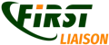

01
Deteksjon og trusseljakt
Vi skriver deteksjonsregler, tuner SIEM-plattformer og jakter på trusler i ditt miljø med Sigma, YARA og KQL.
- Sigma
- YARA
- KQL
- Detection as code
Blue team-spesialister med 16+ års erfaring fra norsk CERT/SOC-drift. Vi bygger deteksjon, håndterer hendelser og herder infrastruktur — som en forlengelse av teamet ditt, ikke konsulenter med rapporter.
16+ års hands-on erfaring fra norsk CERT/SOC-drift. Vi bygger deteksjoner, etterforsker hendelser og herder infrastruktur.
Vi skriver deteksjonsregler, tuner SIEM-plattformer og jakter på trusler i ditt miljø med Sigma, YARA og KQL.
Når hendelsen inntreffer, er vi der. Disk-, minne- og nettverksforensikk med bevissinnhenting som holder i retten.
Systematisk herding av servere, AD og sky. Penetrasjonstesting og purple teaming for å finne og lukke hull.
Tre forsvarspilarer — bygget av operatører som har gjort dette på ordentlig.
Skreddersydde deteksjonsregler i Sigma, YARA, KQL og SPL. SIEM-tuning, trusseljakt og detection-as-code som fanger reelle trusler — ikke bare støy.
Fra første alarm til ferdig rapport. Disk- og minneforensikk, skadevareanalyse, bevissikring og responsavtaler for når minuttene teller.
Penetrasjonstesting, AD-sikkerhetsgjennomgang, sky-sikkerhetsvurdering og systematisk herding. Vi finner hullene og hjelper deg å tette dem.
Strategiske partnerskap som styrker våre sikkerhetskapabiliteter.

Beskyttelse på bedriftsnivå med Microsofts skyteknologier og sikkerhetsløsninger.

Direkte tilknytning til det globale hendelsesresponssamfunnet gjennom FIRST.org-medlemskap.
Hver bransje har unike trusselbilder. Vi bringer operatør-nivå blue team-ekspertise tilpasset din sektor.
Finansinstitusjoner møter sofistikerte trusselaktører som retter seg mot transaksjoner og kundedata.
Helsedata er hovedmål. Vi beskytter systemene klinikere er avhengige av daglig.
Vi bygde ekspertisen vår inne i norsk offentlig sektor CERT/SOC — vi kjenner dette domenet.
Hurtigvoksende teknologiselskaper trenger sikkerhet som holder tritt med utviklingen.
Svar på det norske virksomheter lurer på om cybersikkerhet og våre tjenester.
NIS2 stiller strengere krav til cybersikkerhet for kritisk infrastruktur. Her er hva din virksomhet må gjøre for å bli compliant.
Ransomware-angrep mot norske virksomheter øker. Lær om de nyeste trendene og konkrete tiltak for å beskytte din organisasjon.
En hendelsesresponsplan er verdiløs hvis ingen vet hvordan den brukes. Her er en praktisk guide til å bygge en plan som virker under press.
La oss diskutere hvordan vi kan hjelpe å sikre din organisasjon. Innledende samtale er alltid uforpliktende.